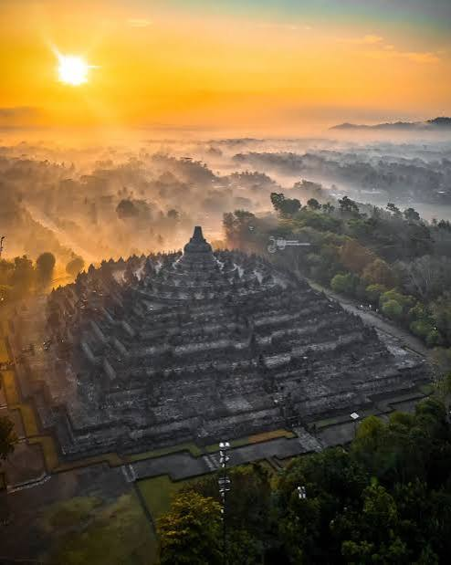
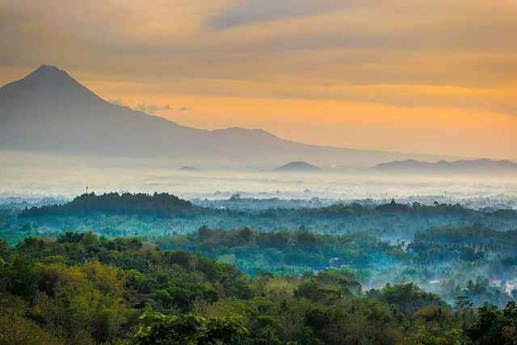
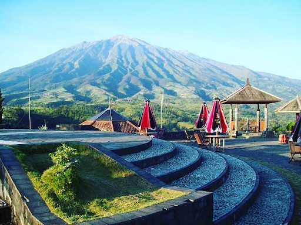
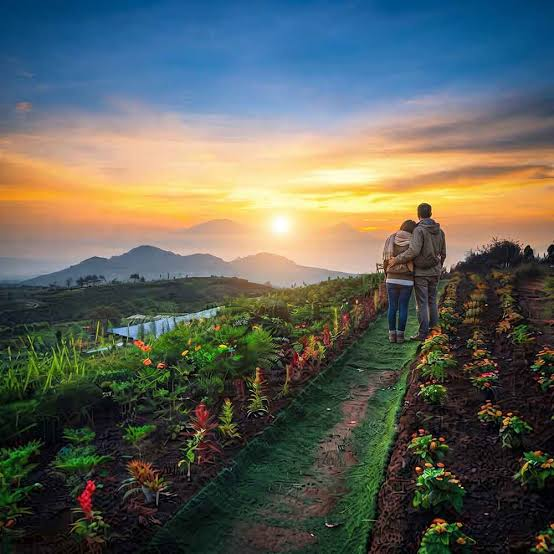
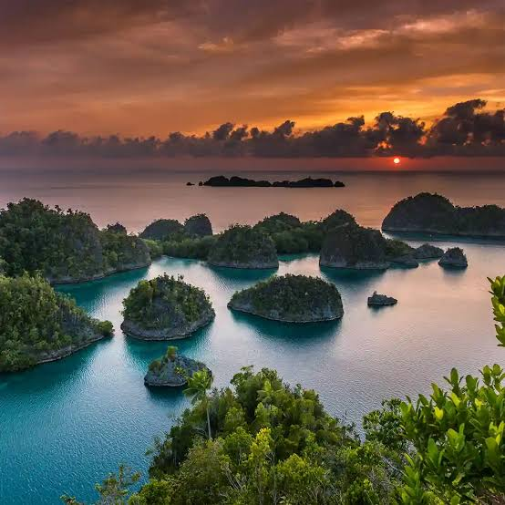
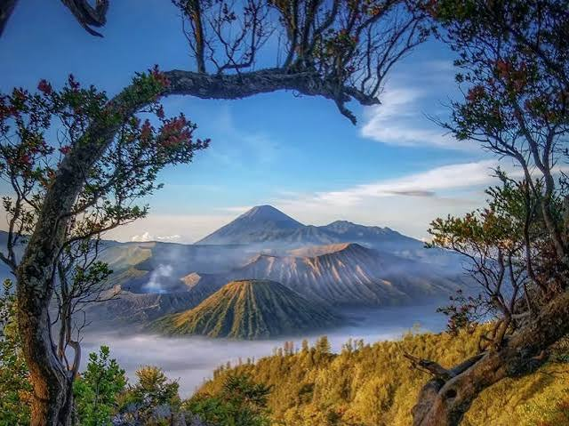
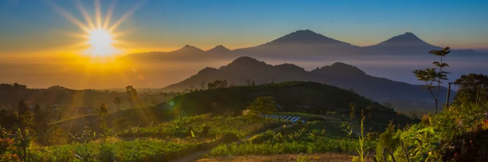
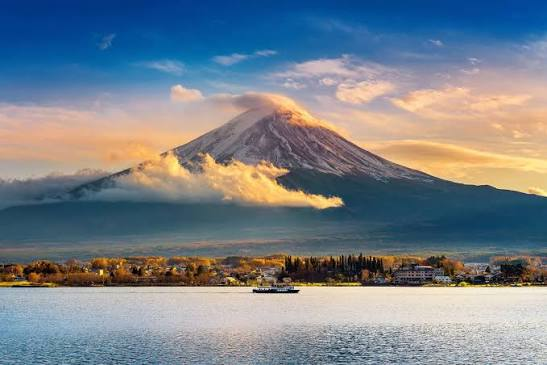
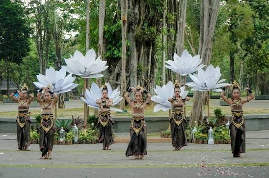

Destinasi Tempat Wisata Pilihan
Jelajahi berbagai keindahan alam, budaya, dan spot menarik untuk liburan tak terlupakan Anda di bawah ini...

Candi Borobudur
Keajaiban dunia Buddha terbesar di dunia yang menawarkan kemegahan arsitektur kuno serta pemandangan matahari terbit yang sangat memukau.

Punthuk Setumbu
Spot terbaik untuk menikmati panorama matahari terbit (sunrise) dengan latar belakang Candi Borobudur yang diselimuti kabut pagi dari ketinggian.

Ketep Pass
Kawasan wisata pegunungan yang menyuguhkan pemandangan megah Gunung Merapi dan Merbabu, lengkap dengan museum vulkanologi.

Silancur Highland
Destinasi wisata dataran tinggi kekinian di lereng gunung yang menawarkan taman bunga indah, spot foto Instagramable, dan panorama alam memesona.

Raja Ampat
Surga wisata bahari kelas dunia yang terletak di Provinsi Papua Barat Daya.

Gunung Bromo
Gunung berapi aktif yang terkenal dengan pemandangan matahari terbitnya yang menakjubkan, lautan pasir, dan kawah yang eksotis.
Galeri Spot Favorit
Dokumentasi keindahan alam dan momen seru wisatawan yang berkunjung ke destinasi pilihan kami.

Sunrise Eksotis
Momen matahari terbit penuh kehangatan yang selalu dinantikan oleh para pelancong lokal maupun mancanegara.

Panorama Pegunungan
Udara sejuk pegunungan hijau yang menyegarkan pikiran serta memberikan ketenangan dari penatnya rutinitas harian.

Wisata Edukasi & Budaya
Mengenal lebih dekat sejarah, relief kuno, serta kekayaan warisan budaya Nusantara yang sarat akan nilai filosofis.
Video Dokumenter Wisata
Saksikan rangkuman keindahan panorama dan keseruan aktivitas wisata dalam balutan video sinematik berkualitas tinggi.
Dokumenter Wisata Pegunungan
Saksikan Wisata gunung secara lebih dekat,lebih bagus dan lebih puas
Vidio Dokumenter Wisata Budaya
Saksikan Pertunjukkan kesenian secara dekat dan intim